A dental clinic SaaS focused on operational organization, data visibility, financial control, and a polished experience designed around a clinic's daily workflow.
E-Clinic was designed to bring a dental clinic's core routines into one platform, connecting scheduling, patient records, finance, permissions, and operational visibility.
The product replaces scattered processes with a clearer, more predictable, and scalable digital structure, combining a professional visual presentation with a strong focus on operational efficiency.
Product screens
01/24
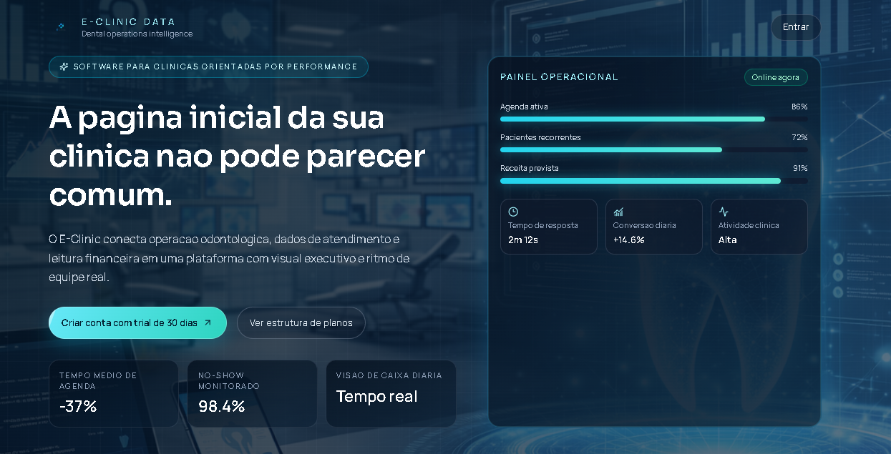
Main product landing page with an executive hero, value proposition, and CTA to start a trial.Features section focused on connected operations, centralized records, security, and financial visibility.Pricing structure with subscription cycles and guided onboarding into the system.
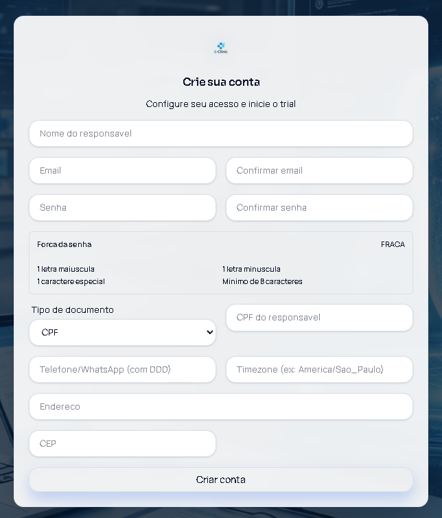
Account creation form with administrator details, identification, time zone, and trial activation.
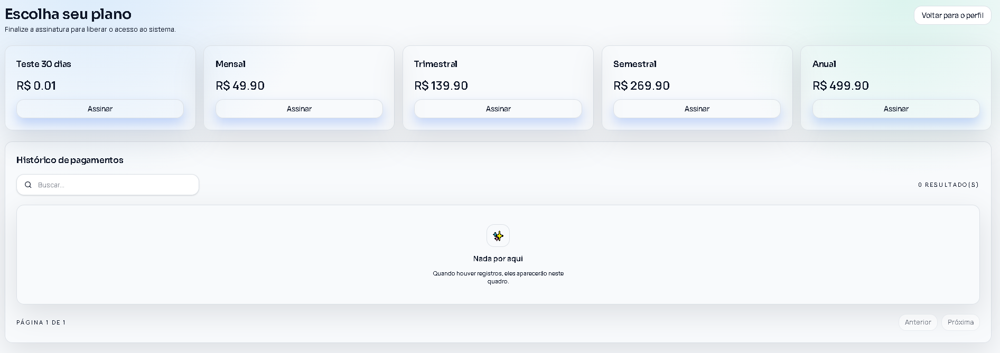
Subscription plan selection with trial, monthly, quarterly, semiannual, and annual billing options.
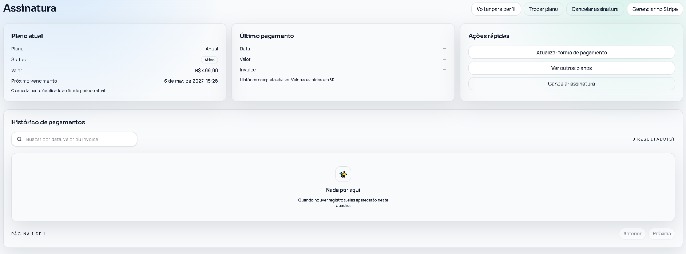
Internal subscription dashboard with the current plan, payment history, and quick management actions.
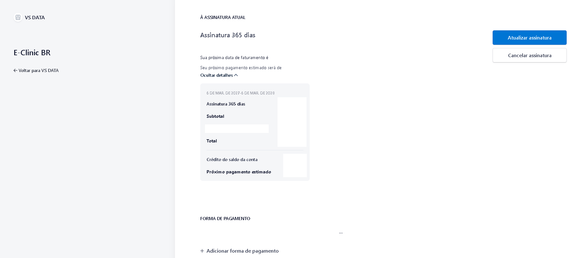
Stripe subscription management for plan changes, cancellation, and payment-method control.Product login screen aligned with the landing-page identity and providing direct access to the clinic dashboard.
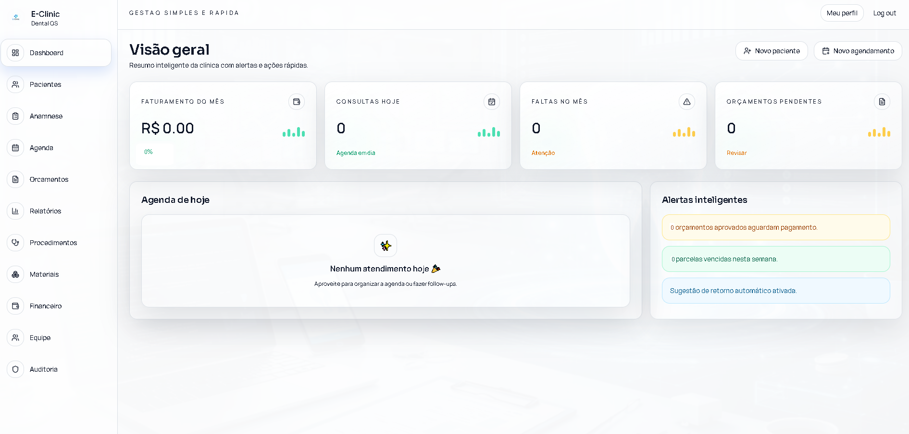
Main dashboard with a clinic overview, daily schedule, quick metrics, and smart alerts.
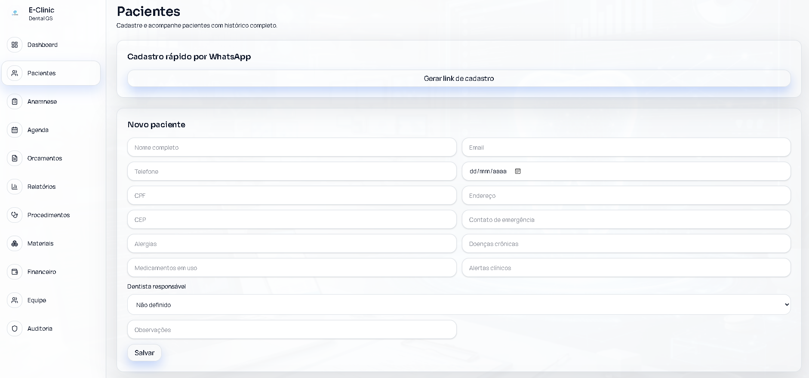
Patient registration workflow with a complete form and a shortcut for generating a WhatsApp registration link.
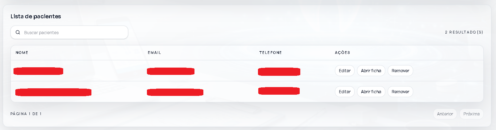
Patient list with search, pagination, and direct operational actions for each record.
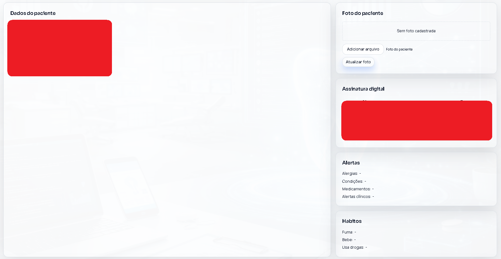
Detailed patient profile with a photo, digital signature, and clinical alerts.
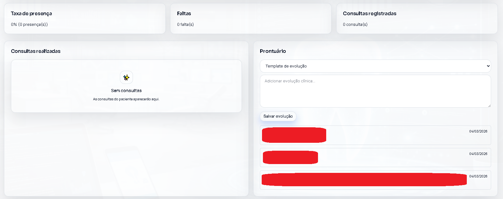
Clinical record with treatment progress, date-based history, and care tracking.
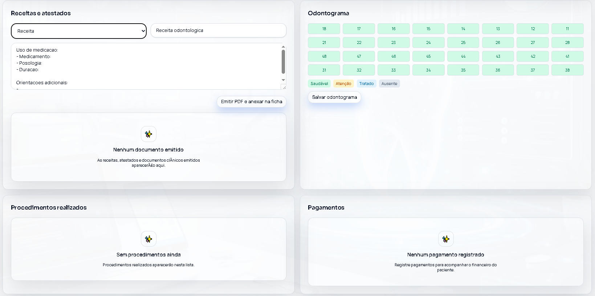
Clinical area with prescriptions, medical certificates, odontogram, and payments organized within the patient's context.
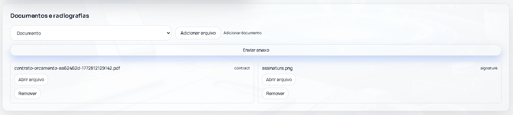
Centralized management of contracts, signatures, documents, and X-rays attached to the patient record.
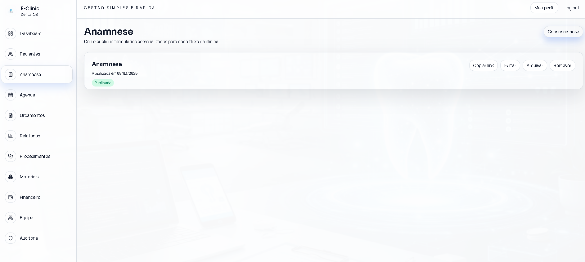
Medical history form builder with publishing status and actions to copy the link, edit, archive, or remove a form.
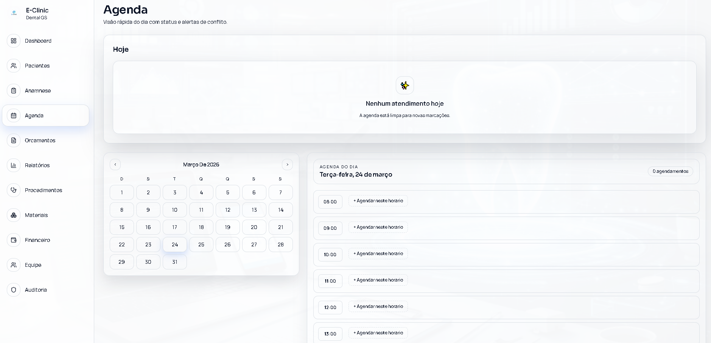
Daily schedule with a calendar, time slots, and quick appointment booking by hour.
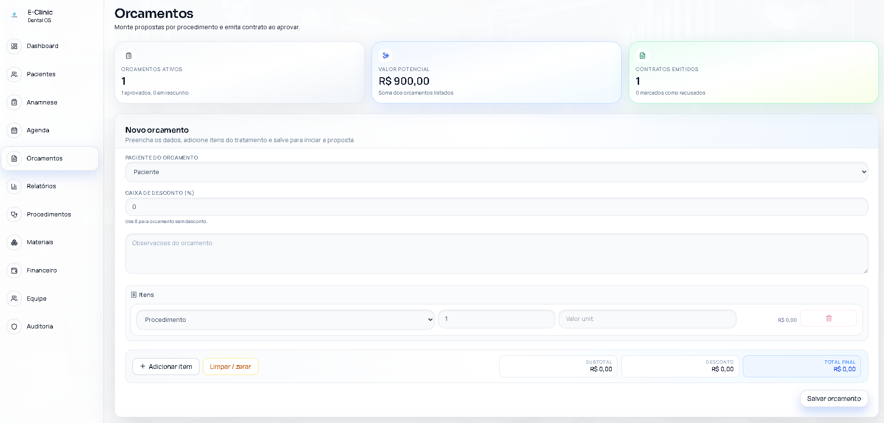
Quote creation with items, notes, discounts, and automatic contract total calculation.
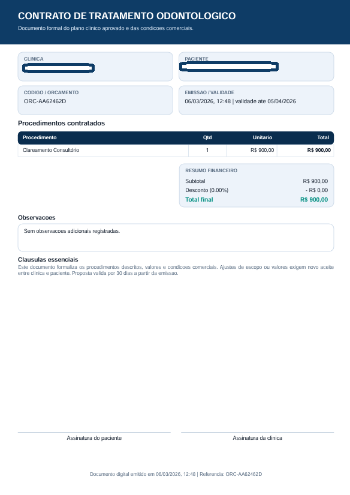
Dental treatment agreement generated from a quote and ready for signing and delivery.
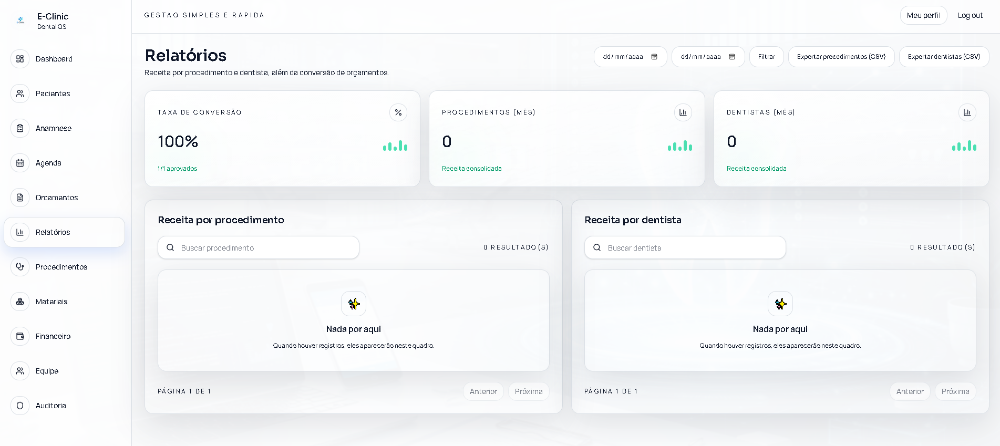
Operational and financial reports with filters, export options, and breakdowns by procedure and dentist.
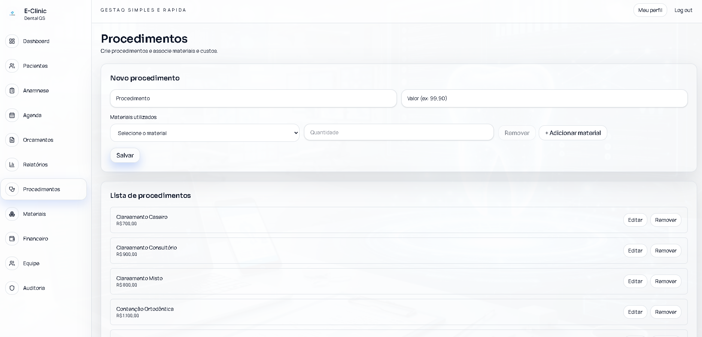
Procedure catalog management with pricing and quick-edit actions.
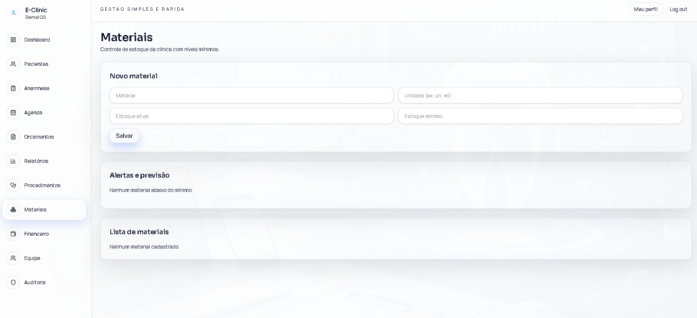
Clinic inventory control with material registration, minimum stock levels, and alert visibility.
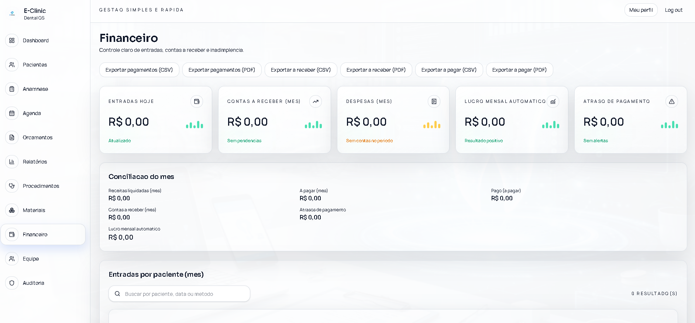
Finance module with exports, cash-flow indicators, monthly reconciliation, and patient-level queries.
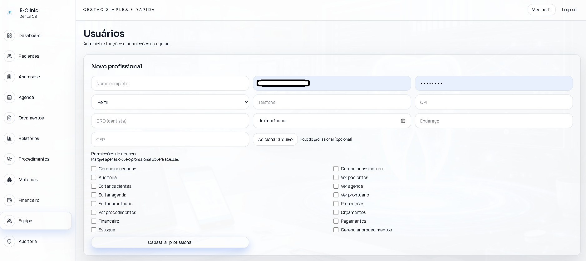
Team management with user profiles, module-level permissions, and professional onboarding.
What the product delivers
Centralized clinical and administrative operations.
A foundation for performance indicators and routine monitoring.
A polished product experience designed to communicate trust and clarity.
A scalable foundation for new features and integrations.